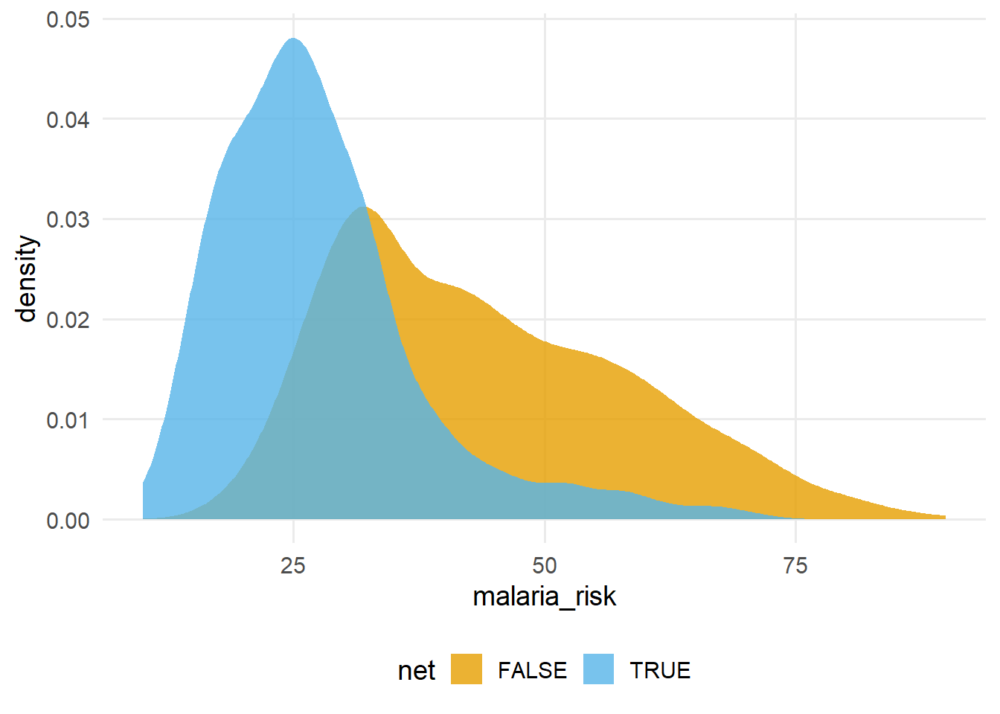
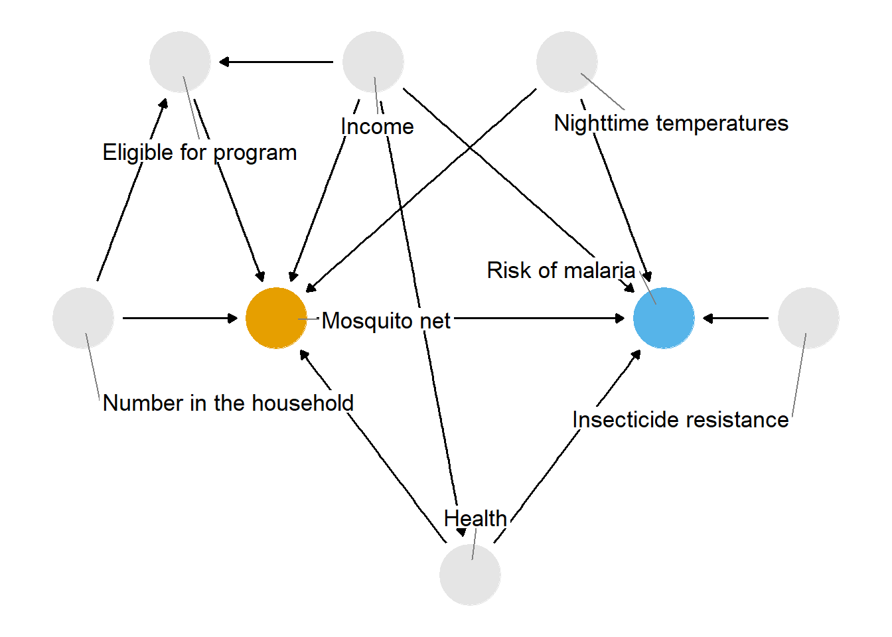
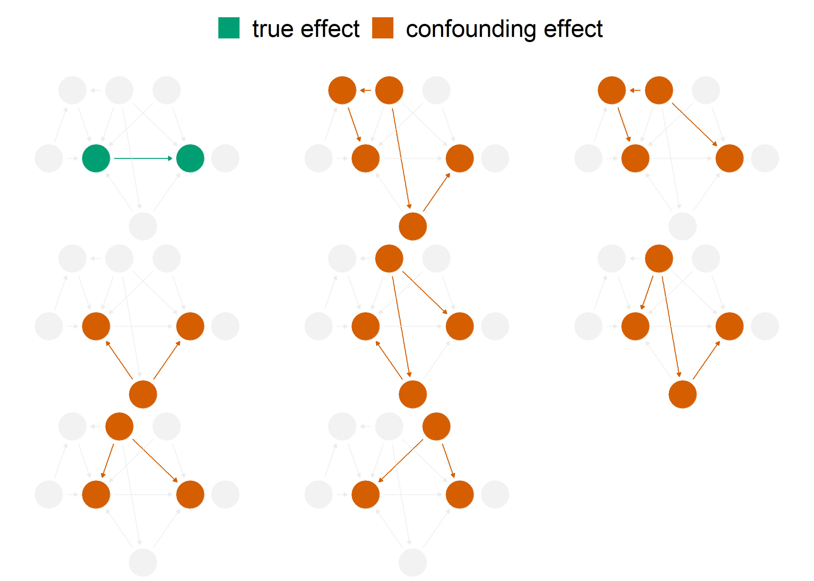
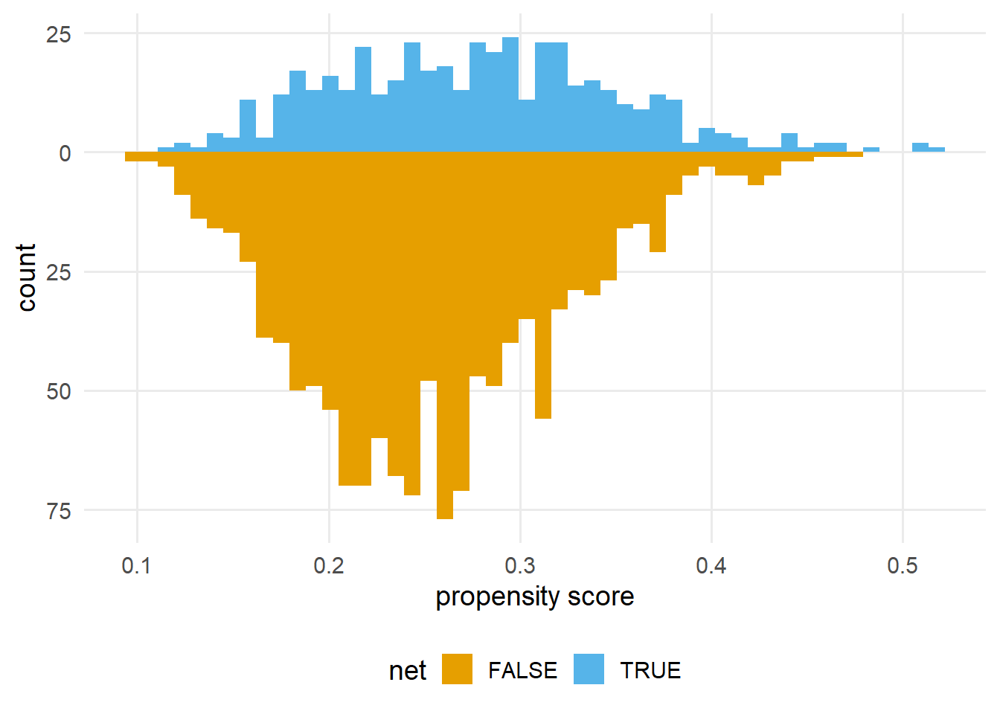
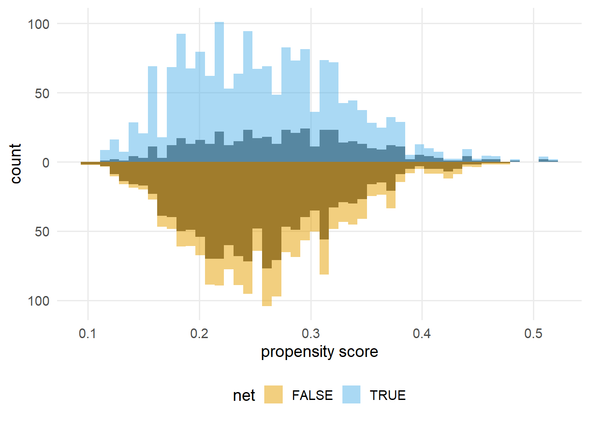
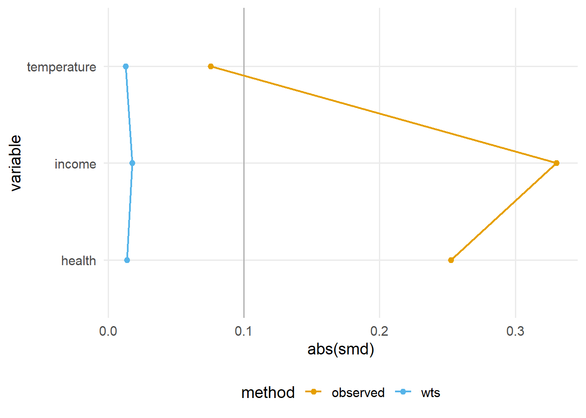
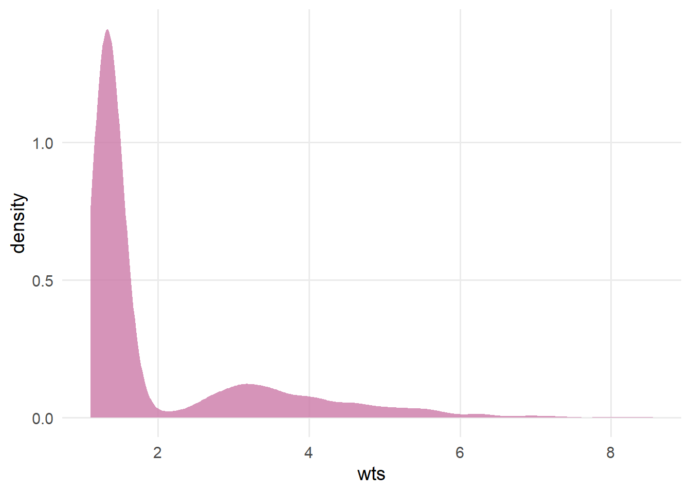
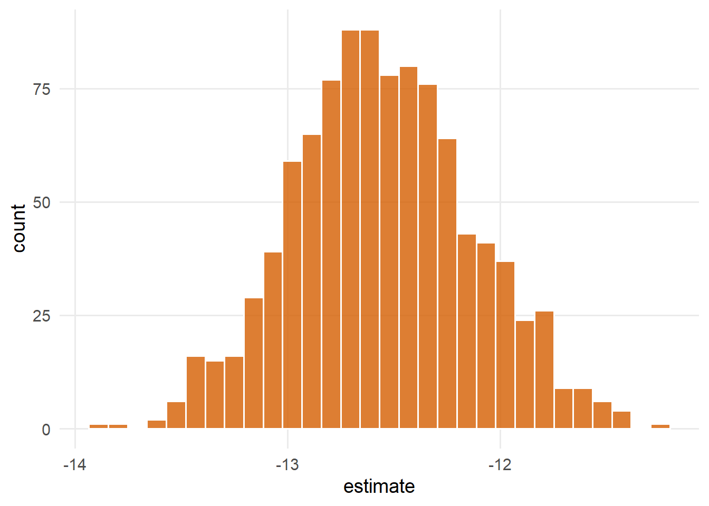
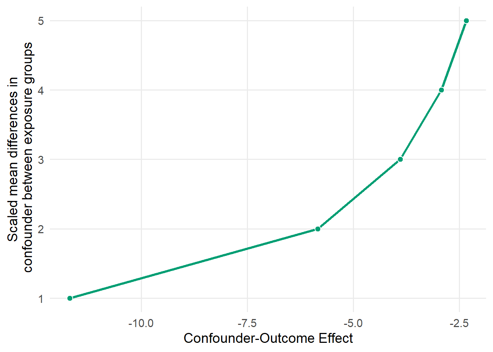
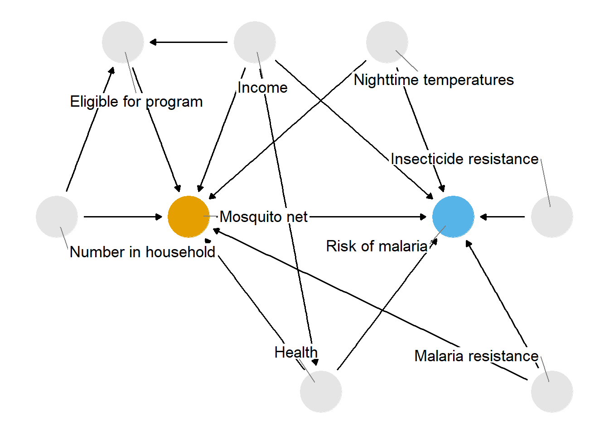

注记Work-in-progress 🚧
You are reading the work-in-progress first edition of Causal Inference in R. This chapter is mostly complete, but we might make small tweaks or copyedits.
The whole game: mosquito nets and malaria · 原书逐章中译
来源：Malcolm Barrett、Lucy D’Agostino McGowan、Travis Gerke，Causal Inference in R · The whole game: mosquito nets and malaria。 本页为中文翻译；原书代码块、公式、图表交叉引用和引用键均按原文保留。统计图在网页渲染时由 R 代码生成，静态插图直接引用原文件。 原书仓库采用 CC BY-NC-SA 4.0；代码采用 MIT 许可。请遵守原许可证并注明作者。
You are reading the work-in-progress first edition of Causal Inference in R. This chapter is mostly complete, but we might make small tweaks or copyedits.
本章中，我们将运用本书所学的技术分析数据。 我们将通过几个关键步骤，完成因果分析的完整实践：
我们将重点介绍每个步骤背后的总体思路，以及将这些步骤串联起来后的全貌；不过，我们并不期待你现在就能完全消化每一个概念。 本书余下的篇幅会逐一详细讲解这些步骤。
在这个引导式练习中，我们将尝试回答一个因果问题：使用蚊帐能否降低疟疾风险？
疟疾仍然是一个严重的公共卫生问题。 尽管自 2000 年以来疟疾发病率有所下降，但在 2020 年及 COVID-19 大流行期间，主要由于卫生服务中断，病例数和死亡数出现了增加 (《World Malaria Report》 2021)。 约 86% 的疟疾死亡发生在 29 个国家。 全部疟疾死亡中近一半发生在其中的六个国家：尼日利亚（27%）、刚果民主共和国（12%）、乌干达（5%）、莫桑比克（4%）、安哥拉（3%）和布基纳法索（3%）。 这些死亡大多发生在 5 岁以下儿童中 (Fink 等 2022)。 疟疾还会对孕妇造成严重健康风险，并导致不良出生结局，包括早产和低出生体重。
蚊帐通过形成一道屏障，阻挡疟原虫主要宿主——蚊子——的感染性叮咬，从而预防疟疾引起的发病和死亡。 人类自古以来就使用蚊帐。 公元前 5 世纪的希腊作家、The Histories 的作者希罗多德曾观察到埃及人把渔网当作蚊帐使用：
为对付数量极多的蚊虫，他们想出了这样的办法：—住在沼泽地上方的人借助高塔，休息时便登上塔去；由于风的缘故，蚊虫飞不到高处。而住在沼泽地里的人则不用高塔，另想了一种办法：—他们每个人都有一张撒网，白天用来捕鱼，夜里则这样使用：把撒网围在睡觉的床四周，然后钻到网下入睡。如果他们裹着衣服或亚麻床单睡觉，蚊虫就会穿透这些东西叮咬；但隔着网，蚊虫连尝试叮咬都不会 (Macaulay 2008)。
许多现代蚊帐还经过杀虫剂处理，这种做法可追溯到第二次世界大战中的俄罗斯士兵 (Nevill 等 1996)，尽管有些人仍把蚊帐当作渔网使用 (Gettleman 2015)。
很容易设想一项回答这一问题的随机试验：将研究参与者随机分配到使用蚊帐或不使用蚊帐的组别，随后随访一段时间，观察两组的疟疾风险是否存在差异。 随机化往往是估计干预因果效应的最佳方法，因为它减少了使估计值有效所需的假设数量（我们将在 因果假设 中讨论这些假设）。 尤其是，随机化能够很好地处理混杂，甚至能控制那些我们尚不知道的混杂因子。
20 世纪 90 年代的几项里程碑式试验研究了使用蚊帐对疟疾风险的影响。 2004 年的一项荟萃分析发现，与不使用蚊帐相比，杀虫剂处理蚊帐使儿童死亡率降低了 17%，疟原虫感染率降低了 13%，无并发症疟疾和重症疟疾的病例数减少了约 50% (Lengeler 2004)。 自世界卫生组织开始推荐使用杀虫剂处理蚊帐以来，杀虫剂抗药性一直备受关注。 不过，后续对试验的分析发现，抗药性尚未影响蚊帐带来的公共卫生获益 (Pryce, Richardson, 和 Lengeler 2018)。
试验对于确定蚊帐项目的经济性也有重要影响。 例如，一项试验比较了免费发放蚊帐与费用分担项目（参与者支付经补贴后的费用购买蚊帐）。 研究作者发现，两组的蚊帐使用情况相近，而免费发放蚊帐由于更容易获得，挽救的生命更多，并且每挽救一条生命所需的费用低于费用分担项目 (Cohen 和 Dupas 2010)。
出于伦理、成本和时间等多种原因，我们可能无法开展新的随机试验来估计使用蚊帐对疟疾风险的影响。 支持使用蚊帐的证据已经充分且稳健，不过，让我们考虑几种观察性因果推断能够发挥作用的情形。
设想我们身处这一主题的试验尚未开展的年代，并假定人们已经开始自行使用蚊帐预防疟疾。 我们的目标可能仍然是开展随机试验，但利用观测数据可以更快地回答问题。 此外，这项研究的结果可能为试验设计或过渡期的政策建议提供指导。
有时，开展试验也不符合伦理。 疟疾研究中的一个例子，是在研究蚊帐有效性时提出的问题：幼儿期的疟疾控制是否会延迟对该病免疫力的形成，从而导致之后发生重症疟疾或死亡？ 既然我们已经知道使用蚊帐非常有效，不提供蚊帐就不符合伦理。 最近的一项观察性研究发现，儿童期使用蚊帐降低全因死亡率的获益会持续到成年期 (Fink 等 2022)。
我们也可能希望估计不同于既往试验的效应，或估计另一人群中的效应。 例如，随机研究和观察性研究都帮助我们更好地理解了以下事实：只要蚊帐的使用率足够高，杀虫剂处理蚊帐就能提高整个社区抵御疟疾的能力，而不仅仅是使使用蚊帐的人受益 (Howard 等 2000; Hawley 等 2003)。
正如我们将在 ?sec-strat-outcome 和 ?sec-g-comp 中看到的，即使能够进行随机化，本书讨论的因果推断技术也往往很有帮助。
开展观察性研究时，认真设想如果条件允许，我们会开展怎样的随机试验，仍然很有帮助。 我们在这项因果分析中试图模拟的试验就是目标试验。 思考目标试验有助于使因果问题更加精确。 我们将在 研究设计何时支持因果推断？ 中更明确地运用这一框架，但现在，让我们先考虑前面提出的因果问题：使用床帐（蚊帐）能否降低疟疾风险？ 这个问题相对直白，但仍然不够明确。 正如在 从随意推断到因果推断 中所见，我们需要澄清几个关键方面：
我们所说的“蚊帐”是指什么？ 蚊帐有多种类型：未经处理的蚊帐、杀虫剂处理蚊帐，以及较新的长效杀虫剂处理蚊帐。
与什么相比的风险？ 例如，我们是在将杀虫剂处理蚊帐与不使用蚊帐进行比较吗？ 还是与未经处理的蚊帐比较？ 或者是在将长效杀虫剂处理蚊帐这类新型蚊帐与已经在用的蚊帐比较？
风险如何定义？ 是指一个人是否感染了疟疾？ 还是指一个人是否死于疟疾？
谁的风险？ 我们希望将这一知识应用于哪个人群？ 实际可行的情况下，哪些人可以纳入研究？ 哪些人可能需要排除？
我们将使用模拟数据回答一个更具体的问题：与不使用蚊帐相比，使用杀虫剂处理蚊帐是否会降低 1 年后感染疟疾的风险？ 这组数据由 Andrew Heiss 博士模拟生成，其情境如下：
……研究者关心的是，使用蚊帐是否会降低个人感染疟疾的风险。 他们收集了某个未具名国家 1,752 户家庭的数据，其中包含与环境因素、个人健康和家庭特征有关的变量。 这些数据不是实验数据—研究者无法控制谁使用蚊帐；各家庭自行决定是申请免费蚊帐，还是自费购买蚊帐，以及拥有蚊帐后是否使用。
因为使用的是模拟数据，我们能够直接获得一个衡量感染疟疾可能性的结局变量，而现实中我们大概无法直接得到这样的变量。 我们将继续使用这一指标，因为它能让我们更仔细地考察真实的效应量；在实践中，我们则需要通过其他替代指标来近似估计效应量，例如在人群中定期开展疟疾检测。 我们还可以放心地假定，数据集中的人群代表了我们希望进行推断的目标人群（那个未具名国家），因为这些数据就是按这一设定模拟生成的。 这些模拟数据保存在 {causalworkshop} 包的 net_data 中，其中包含十个变量：
id一个 ID 变量
net 和 net_num一个二元变量，表示参与者是否使用了蚊帐：使用为 1，未使用为 0
malaria_risk疟疾风险评分，范围为 0-100
income每周收入，以美元计
health健康评分，范围为 0–100
household家庭中共同居住的人数
eligible一个二元变量，表示该家庭是否符合免费蚊帐项目的资格。
temperature夜间平均气温，以摄氏度计
resistance当地蚊子对杀虫剂的抗药性。 评分范围为 0–100，数值越高表示抗药性越强。
使用蚊帐与否的人群，其疟疾风险分布看起来差异很大。
library(tidyverse)
library(causalworkshop)
net_data |>
ggplot(aes(malaria_risk, fill = net)) +
geom_density(color = NA, alpha = 0.8)
在 图 56.1 中，使用蚊帐者的密度分布位于未使用蚊帐者的左侧。 疟疾风险的均值差约为 16.4，提示使用蚊帐可能对预防疟疾具有保护作用。
net_data |>
group_by(net) |>
summarize(malaria_risk = mean(malaria_risk))# A tibble: 2 x 2
net malaria_risk
<lgl> <dbl>
1 FALSE 43.9
2 TRUE 27.5正如预期，简单线性回归也呈现出同样的结果。
library(broom)
net_data |>
lm(malaria_risk ~ net, data = _) |>
tidy()# A tibble: 2 x 5
term estimate std.error statistic p.value
<chr> <dbl> <dbl> <dbl> <dbl>
1 (Intercept) 43.9 0.377 116. 0
2 netTRUE -16.4 0.741 -22.1 1.10e-95如果试图将上述简单估计值解释为因果估计值，我们面临的一个问题是：所观察到的效应可能是由其他因素造成的。 在本例中，我们将重点关注混杂：蚊帐使用和疟疾的共同原因会使观察到的效应产生偏倚，除非我们以某种方式对其进行控制。 确定需要控制哪些变量的最佳方法之一，就是使用因果图。 这类图也称为因果有向无环图（DAGs），能够将我们对暴露、结局以及其他可能相关变量之间因果关系所作的假设可视化。 需要强调的是，构建 DAG 并非由数据驱动；我们是依据关于因果问题结构的专业背景知识，提出拟用的 DAG。
以下是我们针对这一问题提出的 DAG。

我们将在 ?sec-dags 中探讨如何创建和分析 DAG。
在 DAG 中，每个点代表一个变量，每个箭头代表一种因果作用。 换言之，这张图表达了我们认为这些变量之间存在怎样的因果关系。 在 图 56.2 中，我们表达的判断是：
对于其中的一些判断，你可能赞同，也可能不赞同。 这是一件好事！ 将假设明确呈现出来，让我们能够透明地评估分析在科学上的可信度。 使用 DAG 还有一个好处：由于其背后的数学原理，如果假定这张 DAG 正确，我们就能精确确定需要控制的变量子集。
在本练习中，我们依据对数据生成过程的了解，为你提供了一张合理的 DAG。 在现实中，构建 DAG 是一项挑战，需要深入思考、领域专业知识，而且通常需要多位专家合作。
我们面临的主要问题是：分析手头的数据时，看到的不仅有蚊帐使用对疟疾风险的影响，还有所有这些其他关系的影响。 用 DAG 的术语来说，我们存在不止一条开放的因果路径。 如果这张 DAG 正确，那么我们共有八条因果路径：蚊帐使用与疟疾风险之间的路径，以及另外七条混杂路径。 蚊帐使用与疟疾风险之间的关联，是所有这些路径作用的混合结果。

当我们拟合一个仅包含蚊帐使用和疟疾风险的朴素线性回归时，所观察到的效应是不正确的，因为 图 56.3 中另外七条混杂路径扭曲了这一效应。 用 DAG 的术语来说，我们需要阻断这些会扭曲目标因果估计值的开放路径。 （我们可以通过分层、匹配、加权等多种技术阻断路径。 本书将介绍其中的若干方法。） 好在通过指定 DAG，我们能够精确确定需要控制哪些变量。 对于这张 DAG，我们需要控制三个变量：health, income, and temperature。 这三个变量构成一个最小调整集，即阻断所有混杂路径所需的最小变量集合（也可能存在多个这样的集合）。 我们将在 ?sec-dags 中进一步讨论调整集。
我们将使用一种称为逆概率加权（IPW）的技术来控制这些变量，并在 ?sec-using-ps 中详细介绍这一技术。 我们将根据混杂因子，使用逻辑回归预测接受处理的概率，也就是倾向评分。 随后，我们将计算逆概率权重，并将其应用于上面拟合的线性回归模型。 倾向评分模型将暴露——蚊帐使用——作为因变量，将最小调整集中的变量作为自变量。
一般而言，我们希望依据领域专业知识和良好的建模实践来拟合倾向评分模型。 例如，我们可能希望使用样条函数，允许连续型混杂因子呈现非线性关系，也可能希望加入混杂因子之间必要的交互作用。 由于这些是模拟数据，我们知道不需要这些额外参数（因此将略去它们），但在实践中，你往往需要加入它们。 我们将在 ?sec-using-ps 中进一步讨论这一点。
倾向评分模型是一个公式为 net ~ income + health + temperature 的逻辑回归模型，它根据收入、健康状况和气温这几个混杂因子预测使用蚊帐的概率。
propensity_model <- glm(
net ~ income + health + temperature,
data = net_data,
family = binomial()
)
# the first six propensity scores
head(predict(propensity_model, type = "response")) 1 2 3 4 5 6
0.2464 0.2178 0.3230 0.2307 0.2789 0.3060 我们可以用多种方式利用倾向评分控制混杂。 在本例中，我们将重点使用加权方法。 具体而言，我们将计算用于估计平均处理效应（ATE）的逆概率权重。 ATE 对应一个特定的因果问题：如果研究中的每个人都使用蚊帐，与研究中没有任何人使用蚊帐相比，会有怎样的差异？
为了计算 ATE，我们将使用 {broom} 和 {propensity} 包。 broom 的 augment() 函数从模型中提取与预测有关的信息，并将其合并到数据中。 propensity 的 wt_ate() 函数根据倾向评分和暴露计算逆概率权重。
在逆概率加权中，ATE 权重等于接受实际所接受处理的概率的倒数。 换言之，如果你使用了蚊帐，ATE 权重就是你使用蚊帐的概率的倒数；如果你没有使用蚊帐，ATE 权重就是你没有使用蚊帐的概率的倒数。
library(broom)
library(propensity)
net_data_wts <- propensity_model |>
augment(data = net_data, type.predict = "response") |>
# .fitted is the value predicted by the model
# for a given observation
mutate(wts = wt_ate(.fitted, net))
net_data_wts |>
select(net, .fitted, wts) |>
head()# A tibble: 6 x 3
net .fitted wts
<lgl> <dbl> <psw{ate}>
1 FALSE 0.246 1.327
2 FALSE 0.218 1.279
3 FALSE 0.323 1.477
4 FALSE 0.231 1.300
5 FALSE 0.279 1.387
6 FALSE 0.306 1.441wts 表示在即将拟合的结局模型中，每条观测的权重将上调或下调到什么程度。 例如，第 16 户家庭使用了蚊帐，其预测使用概率为 0.41。 考虑到他们实际上使用了蚊帐，这一概率相当低，因此他们的权重较高，为 2.42。 换言之，与上面拟合的朴素线性模型相比，这户家庭的权重将提高。 第 1 户家庭没有使用蚊帐；其预测的蚊帐使用概率为 0.25（换一种说法，预测的不使用蚊帐概率为 0.75）。 这一预测更符合其 net 观测值，但模型仍预测他们有一定概率使用蚊帐，因此其权重为 1.28。
倾向评分加权的目标，是对观测人群赋予权重，使暴露组之间的混杂因子分布达到平衡。 换言之，原则上，我们是在移除 DAG 中从混杂因子指向暴露的箭头，使混杂路径不再扭曲估计值。 下面按组展示倾向评分的分布，使用的是 {halfmoon} 包中用于评估倾向评分模型平衡性的 geom_mirror_histogram() 函数：
library(halfmoon)
ggplot(net_data_wts, aes(.fitted)) +
geom_mirror_histogram(
aes(fill = net),
bins = 50
) +
scale_y_continuous(labels = abs) +
labs(x = "propensity score")
倾向评分加权构建了一个伪总体，其中两组的分布更加相似：
ggplot(net_data_wts, aes(.fitted)) +
geom_mirror_histogram(
aes(group = net),
bins = 50
) +
geom_mirror_histogram(
aes(fill = net, weight = wts),
bins = 50,
alpha = 0.5
) +
scale_y_continuous(labels = abs) +
labs(x = "propensity score")
在本例中，未加权的分布并不算差——它们的形状有些相似，而且重叠部分相当多——不过，图 56.5 中加权后的分布要相似得多。
倾向评分加权和大多数其他因果推断技术，只能处理已观测到的混杂因子，而且前提是我们对它们正确建模。 遗憾的是，仍然可能存在未测量混杂，我们将在后面讨论。
随机化是一种确实能够处理未测量混杂的因果推断技术，这也是它如此强大的原因之一。
我们还可能想知道，各组在每个混杂因子上的平衡程度如何。 一种做法是，分别计算加权和未加权时各混杂因子的标准化均值差（SMDs）。 我们将使用 tidy_smd() 计算 SMD，再用 geom_love() 绘图；这两个函数都来自 halfmoon 包。
plot_df <- tidy_smd(
net_data_wts,
c(income, health, temperature),
.group = net,
.wts = wts
)
ggplot(
plot_df,
aes(
x = abs(smd),
y = variable,
group = method,
color = method
)
) +
geom_love()
一个常用准则是，达到平衡的混杂因子，其 SMD 的绝对值应小于 0.1。 0.1 只是一个经验阈值，但若按此判断，图 56.6 中的变量在加权后已达到良好的平衡（而在加权前并不平衡）。
在将权重用于结局模型之前，先检查它们的总体分布，看看是否存在极端权重。 极端权重可能使结局模型中的估计值及方差不稳定，因此我们需要留意这一点。 我们还将在 ?sec-estimands 中讨论其他几类不易出现这一问题的权重。
net_data_wts |>
ggplot(aes(wts)) +
geom_density(fill = "#CC79A7", color = NA, alpha = 0.8)Warning in vec_ptype2.psw.double(x = x, y = y, x_arg = x_arg, y_arg = y_arg, : Converting psw to numeric
i Class-specific attributes and metadata have been
dropped
i Use explicit casting to numeric to avoid this
warning
Converting psw to numeric
i Class-specific attributes and metadata have been
dropped
i Use explicit casting to numeric to avoid this
warning
图 56.7 中的权重呈偏态分布，但没有特别离谱的数值。 如果出现极端权重，我们可以尝试截尾或稳定化处理，也可以考虑计算另一个估计目标对应的效应，这将在 ?sec-estimands 中讨论。 不过，这里看起来并不需要这样做。
现在，我们可以使用 ATE 权重，尝试在朴素线性回归模型中控制混杂。 在这个例子中，拟合这样的模型相当简单：仍然拟合之前的模型，只需加上 weights = wts，即可纳入逆概率权重。
net_data_wts |>
lm(malaria_risk ~ net, data = _, weights = wts) |>
tidy(conf.int = TRUE)# A tibble: 2 x 7
term estimate std.error statistic p.value conf.low
<chr> <dbl> <dbl> <dbl> <dbl> <dbl>
1 (Inte~ 42.7 0.442 96.7 0 41.9
2 netTR~ -12.5 0.624 -20.1 5.50e-81 -13.8
# i 1 more variable: conf.high <dbl>平均处理效应的估计值为 -12.5 (95% CI -13.8, -11.3)。 遗憾的是，我们目前使用的置信区间并不正确，因为它们没有考虑权重估计过程中的不确定性。 一般来说，如果不考虑这种不确定性，倾向评分加权模型的置信区间就会过窄。 因此，置信区间的实际覆盖率与标称覆盖率不符（它们并不是 95% 置信区间，因为实际覆盖率远低于 95%），这可能导致错误解读。
有几种方法可以解决这个问题，我们将在 ?sec-outcome-model 中详细讨论，包括 Bootstrap、稳健标准误，以及使用经验三明治估计量显式考虑估计过程。 在这个例子中，我们将使用 Bootstrap，它是一种通过重抽样计算参数分布的灵活工具。 对于许多因果模型，如果相关问题（尤其是标准误）没有闭式解，或者我们希望避免许多此类解所固有的参数假设，Bootstrap 都是一个有用的工具；关于 Bootstrap 是什么以及它如何运作，请参阅 ?sec-appendix-bootstrap 。 我们将使用 tidymodels 生态系统中的 {rsample} 包来处理 Bootstrap 样本。
正因为 Bootstrap 非常灵活，我们需要仔细思考所计算统计量的不确定性来源。 我们可能很容易想到写出下面这样的函数，来估计感兴趣的统计量（netTRUE 的点估计值）：
library(rsample)
fit_ipw_not_quite_rightly <- function(.split, ...) {
# get bootstrapped data frame
.df <- as.data.frame(.split)
# fit ipw model
lm(malaria_risk ~ net, data = .df, weights = wts) |>
tidy()
}然而，这个函数无法给出正确的置信区间，因为它把逆概率权重当成了固定值。 当然，它们并不是固定值；我们刚刚才用逻辑回归估计出这些权重！ 我们需要对整个建模过程进行 Bootstrap，以考虑这种不确定性。 对于每一个 Bootstrap 样本，我们都需要拟合倾向评分模型，计算逆概率权重，然后拟合加权结局模型。
library(rsample)
fit_ipw <- function(.split, ...) {
# get bootstrapped data frame
.df <- as.data.frame(.split)
# fit propensity score model
propensity_model <- glm(
net ~ income + health + temperature,
data = .df,
family = binomial()
)
# calculate inverse probability weights
.df <- propensity_model |>
augment(type.predict = "response", data = .df) |>
mutate(wts = wt_ate(.fitted, net))
# fit correctly bootstrapped ipw model
lm(malaria_risk ~ net, data = .df, weights = wts) |>
tidy()
}现在，我们已经明确了每次迭代中如何计算估计值，接下来用 rsample 的 bootstraps() 函数创建 Bootstrap 数据集。 times 参数决定创建多少个 Bootstrap 数据集；这里我们创建 1,000 个。
bootstrapped_net_data <- bootstraps(
net_data,
times = 1000,
# required to calculate CIs later
apparent = TRUE
)
bootstrapped_net_data# Bootstrap sampling with apparent sample
# A tibble: 1,001 x 2
splits id
<list> <chr>
1 <split [1752/657]> Bootstrap0001
2 <split [1752/641]> Bootstrap0002
3 <split [1752/632]> Bootstrap0003
4 <split [1752/647]> Bootstrap0004
5 <split [1752/626]> Bootstrap0005
6 <split [1752/622]> Bootstrap0006
7 <split [1752/650]> Bootstrap0007
8 <split [1752/659]> Bootstrap0008
9 <split [1752/640]> Bootstrap0009
10 <split [1752/687]> Bootstrap0010
# i 991 more rows结果是一个嵌套数据框：每个 splits 对象都包含元数据，rsample 利用这些元数据从原始数据中提取相应的 Bootstrap 样本，共得到 1,000 个样本。 实际上，结果有 1,001 行，因为 apparent = TRUE 还保留了一份原始数据框副本，某些类型的置信区间计算需要用到它。 接下来，我们将运行 fit_ipw() 1,001 次，构建 estimate 的分布。 我们所做计算的核心是
fit_ipw(bootstrapped_net_data$splits[[n]])其中，n 是 1,001 个索引中的一个。 我们将使用 purrr 的 map() 函数，依次遍历每个 split 对象。
ipw_results <- bootstrapped_net_data |>
mutate(boot_fits = map(splits, fit_ipw))
ipw_results# Bootstrap sampling with apparent sample
# A tibble: 1,001 x 3
splits id boot_fits
<list> <chr> <list>
1 <split [1752/657]> Bootstrap0001 <tibble [2 x 5]>
2 <split [1752/641]> Bootstrap0002 <tibble [2 x 5]>
3 <split [1752/632]> Bootstrap0003 <tibble [2 x 5]>
4 <split [1752/647]> Bootstrap0004 <tibble [2 x 5]>
5 <split [1752/626]> Bootstrap0005 <tibble [2 x 5]>
6 <split [1752/622]> Bootstrap0006 <tibble [2 x 5]>
7 <split [1752/650]> Bootstrap0007 <tibble [2 x 5]>
8 <split [1752/659]> Bootstrap0008 <tibble [2 x 5]>
9 <split [1752/640]> Bootstrap0009 <tibble [2 x 5]>
10 <split [1752/687]> Bootstrap0010 <tibble [2 x 5]>
# i 991 more rows结果是另一个嵌套数据框，其中新增了一列 boot_fits。 boot_fits 的每个元素都是相应 Bootstrap 数据集的 IPW 结果。 例如，第一个 Bootstrap 数据集的 IPW 结果为：
ipw_results$boot_fits[[1]]# A tibble: 2 x 5
term estimate std.error statistic p.value
<chr> <dbl> <dbl> <dbl> <dbl>
1 (Intercept) 42.7 0.436 98.0 0
2 netTRUE -12.9 0.615 -20.9 4.28e-87现在，我们得到了估计值的分布：
ipw_results |>
# remove original data set results
filter(id != "Apparent") |>
mutate(
estimate = map_dbl(
boot_fits,
# pull the `estimate` for `netTRUE` for each fit
\(.fit) {
.fit |>
filter(term == "netTRUE") |>
pull(estimate)
}
)
) |>
ggplot(aes(estimate)) +
geom_histogram(fill = "#D55E00FF", color = "white", alpha = 0.8)
图 56.8 展示了 estimate 的变异情况，接下来用 rsample 的 int_t()，根据 Bootstrap 分布计算 95% 置信区间：
boot_estimate <- ipw_results |>
# calculate T-statistic-based CIs
int_t(boot_fits) |>
filter(term == "netTRUE")
boot_estimate# A tibble: 1 x 6
term .lower .estimate .upper .alpha .method
<chr> <dbl> <dbl> <dbl> <dbl> <chr>
1 netTRUE -13.3 -12.6 -11.7 0.05 student-t现在，我们得到了经过混杂因子调整、且标准误正确的估计值。 所有家庭都使用蚊帐与没有任何家庭使用蚊帐相比，对疟疾风险的效应估计值为 -12.6 (95% CI -13.3, -11.7)。 在这项研究中，蚊帐看起来确实能够降低疟疾风险。
我们已经梳理出一条分析路径：从观察性数据出发，审慎思考想要提出的因果问题，明确回答这个问题所需的假设，然后将这些假设应用于统计模型。 要正确回答因果问题，前提是我们的假设大体正确。 但如果这些假设偏离事实较多，又会怎样呢？
提前揭晓答案：我们刚刚算出的结果是错误的。 费了这么大的功夫，居然还是如此！
开展因果分析时，最好通过敏感性分析来检验自己的假设。 任何研究都存在许多潜在的偏倚来源，也有许多相应的敏感性分析方法（?sec-sensitivity）；这里，我们将重点关注无混杂假设。
我们先从较宽泛的敏感性分析入手，然后再探讨具体的未测量混杂因子。 当我们对未测量混杂因子了解较少时，可以使用临界点分析，考察需要多大程度的混杂，才会使估计值变为零效应值。 换句话说，未测量混杂因子的作用强度需要达到多大，才能完全解释我们观察到的结果？ {tipr} 包是一个开展敏感性分析的工具包。 我们来考察一个未知且服从正态分布的混杂因子的临界点。 tip_coef() 函数接收一个估计值（回归模型中的 beta 系数，或该系数的上限或下限）。 此外，还需要提供以下两者之一：1）暴露组之间该混杂因子的标准化均值差；或 2）该混杂因子对结局的效应。 我们将选用更接近 0（零效应值）的 conf.high 作为估计值，并提出问题：混杂因子对疟疾风险的影响需要有多大，才能使无偏置信区间的上限为 0？ 我们将用 tipr 分别计算 5 种情境下的答案，其中暴露组之间该混杂因子的均值差分别为 1、2、3、4 或 5。
library(tipr)
tipping_points <- tip_coef(
boot_estimate$.upper,
exposure_confounder_effect = 1:5
)
tipping_points |>
ggplot(aes(confounder_outcome_effect, exposure_confounder_effect)) +
geom_line(color = "#009E73", linewidth = 1.1) +
geom_point(fill = "#009E73", color = "white", size = 2.5, shape = 21) +
labs(
x = "Confounder-Outcome Effect",
y = "Scaled mean differences in\n confounder between exposure groups"
)
如果存在一个未测量混杂因子，其在暴露组之间的标准化均值差为 1，那么该混杂因子需要将疟疾风险降低约 -11.7。 与其他效应相比，这个效应相当强，但如果我们能想到可能遗漏的某个因素，这种情况也许是可能的。 反过来，假设蚊帐使用与未测量混杂因子的关系非常强，标准化均值差为 5。 在这种情况下，混杂因子与疟疾之间的关联强度只需达到 -2.3。 现在我们需要考虑：结合我们的领域知识和本次分析中观察到的效应，哪些情境是合理的？
现在，我们来考虑一种更具体的敏感性分析。 一些族群，如 Fulani，具有对疟疾的遗传抵抗力 (Arama 等 2015)。 假设在我们的模拟数据中，这个未具名国家的某个未具名族群也具有这种对疟疾的遗传抵抗力。 由于历史原因，这个族群的蚊帐使用率也非常高。 net_data 中没有这个变量，但假设根据文献，我们可以对本样本作出以下估计：
有了这些信息，我们就可以用 tipr 对已经计算出的估计值进行调整，以考虑这个未测量混杂因子。 我们将使用 adjust_coef_with_binary() 计算调整后的估计值。
adjusted_estimates <- boot_estimate |>
select(.estimate, .lower, .upper) |>
unlist() |>
adjust_coef_with_binary(
exposed_confounder_prev = 0.26,
unexposed_confounder_prev = 0.05,
confounder_outcome_effect = -10
)
adjusted_estimates# A tibble: 3 x 4
effect_adjusted effect_observed
<dbl> <dbl>
1 -10.5 -12.6
2 -11.2 -13.3
3 -9.58 -11.7
# i 2 more variables:
# exposure_confounder_effect <dbl>,
# confounder_outcome_effect <dbl>如果对疟疾的遗传抵抗力是一个混杂因子，调整后的估计值为 -10.5 (95% CI -11.2, -9.6)。
事实上，这些数据在模拟时确实包含这样一个混杂因子。 蚊帐使用对疟疾的真实效应约为 -10，生成这些数据的真实 DAG 如下：

net_data. This DAG is identical to the one we proposed with one addition: genetic resistance to malaria causally reduces the risk of malaria and impacts net use. It’s thus a confounder and a part of the minimal adjustment set required to get an unbiased effect estimate. In otherwords, by not including it, we’ve calculated the wrong effect.
图 56.10 中的未测量混杂因子，在数据集 net_data_full 中对应变量 genetic_resistance。 如果重新计算蚊帐对疟疾风险的平均处理效应的 IPW 估计值，我们会得到 -10.3 (95% CI -11.1, -9.3)，这更接近真实答案 -10。
你怎么看？ 这个估计值可靠吗？ 为了估计因果效应，我们需要作出一些假设，主要是无混杂假设；我们是否已经充分处理了这些假设？ 你会如何质疑这个模型，又会采取哪些不同的做法？ 没错，因为这些数据是模拟生成的，所以我们知道 -10 是正确答案；但在实践中，我们永远无法完全确定，因此需要不断检视这些假设，直到确信它们足够稳健。 我们将在 ?sec-sensitivity 中探讨这些方法以及其他方法。
为了计算这个效应，我们：
在本书后续内容中，我们将遵循这些基本步骤，分析许多领域的实例。 我们将更深入地学习倾向评分技术，探索估计因果效应的其他方法，并且最重要的是，反复检验所作假设是否合理——即使我们永远无法完全确定。